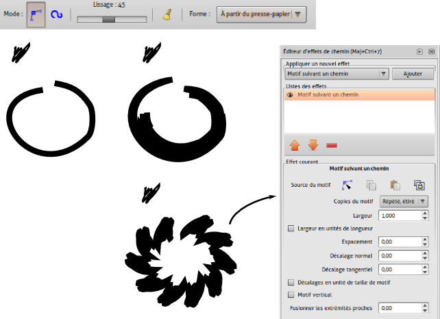

Dessiner avec les courbes dans Inkscape
Dans la prise en main nous avons vu comment créer la géométrie des glyphes à partir de formes géométriques. Il est bien évident que les possibilités offertes par cette méthode ne seront pas toujours suffisantes. Traitons ici des options permettant de dessiner des formes géométriques moins régulières à l'aide des courbes de Bézier, de l'outil de calligraphie, des courbes Spiro et des effets de chemin.
Présentation du dessin de courbes de Bézier
Les courbes de Bézier sont l'élément fondamental du dessin dans Inkscape, comme en Postscript. Toute forme tracée non géométrique sera transformée en courbe de Bézier. Ainsi, les outils Crayon, Plume (Bézier), Calligraphie, Gomme permettent tous d'en produire.
l'outil Crayon s'utilise simplement en glissant la souris, bouton gauche enfoncé. Pour donner au trait une épaisseur moins homogène que son épaisseur par défaut, il suffit de dessiner une première forme, de la copier (Edition > Copier), de choisir dans ses options Formes, l'option À partir du presse-papier. cette option existe aussi pour l'outil de Courbe de Bézier.
L'effet appliqué à crayon sous forme d'une épaisseur pourra être paramètrée dans la fenêtre d'Éditeur d'effet de chemin (menu [Chemin]).

Utiliser les courbes spiro dans Inkscape
Dans Inkscape comme dans FontForge, les courbes spiro permettent de dessiner des courbes parfaitement continues pour des polices "rondes". Les deux logiciels fonctionnent de la même façon de ce point de vue; ce qui améliore grandement la compatibilité des logiciels. Les options de courbes Spiro sont disponibles dans les outils crayon et courbe de Bézier. Traditionnellement l'outil crayon est prévu pour suivre les mouvements de la souris et l'outil courbe de bézier défini les courbes par le positionnement exact de points. Pour la création de fontes, on utilisera en général la seconde méthode. L'option Spiro disponible dans la barre d'option de ces deux outils efface partiellement la différenciation entre ces outils en appliquant une sur-couche très forte. Les courbes créées à l'aide de cette option sont d'une très grande pureté mais dessiner avec est surprenant au début. N'hésitez pas à vous entraîner ou à retoucher vos courbes pour arriver au résultat souhaité.
Ci-dessous, un simple trait au crayon pouvant servir de base pour un "e" transformé avec Spiro à droite. En-dessous, un effet de forme génère une épaisseur au trait. On voit clairement la modification du trait entre le crayon standard et le crayon avec l'option Spiro. Des irrégularités ont été effacées et la courbe a été renforcée et uniformisée.

Utiliser l'outil Calligraphie
Cet outil, issu du programme Dynadraw, implémente une technique de dessin dynamique qui applique un filtre simple a la position de la souris. Ici, la brosse se transforme comme un objet physique avec une masse, une vitesse et une friction. En les changeant, de nombreux types de contours peuvent voir le jour. Cela rend facile le dessin de contours, doux et consistant et permet à l'aide d'une tablette graphique de compléter les possibilités offertes par le crayon
- Fleche gauche et droite
- Ajuste la largeur
- Fleche haut et bas
- Ajuste l’angle
- Ctrl
- Crée un guide, permettant de créer des lignes régulièrement espacées comme des hachures. Sélectionnez d’abord le chemin initial de référence puis en passant à l’outil Calligraphie, appuyez sur [Ctrl]. Un cercle centré sur la souris apparaît alors : celui-ci affiche la distance entre le chemin à venir et le chemin existant. Cliquez et glissez pour dessiner un nouveau chemin aligné sur le précédent.
- Alt (ou Alt+Shift)
- [Alt] active l’option d’affinnage. Avec celle-ci, il est
possible de réduire de façon dynamique la largeur d’un chemin en
glissant simplement la souris sur les chemins à modifier. De façon
similaire, [Shift]+[Alt] Permet d’élargir le chemin :
[Home] Place la largeur au minimum, c’est-à-dire 1.
[End] Place la largeur au maximum, c’est-à-dire 100.
Les options de l’outil sont accessibles dans la barre options d’outils. Cet outil s'utilisant de préférence avec une tablette graphique, de nombreux essais seront nécessaire pour arriver à un résultat souhaité.
Dessiner des courbes de Bézier
Les courbes de Bézier sont un des plus fantastique outil dans Inkscape. Elles permettent de dessiner toute forme libre avec une grande précision.
Utilisation
Pour créer une courbe de Bézier dans Inkscape, cliquer sur l'icône dans la barre d'outils, ou appuyer sur b ou [Maj]+[F6].
Cliquer avec le bouton gauche pour créer le premier nœud.
La ligne rouge est le tracé en cours d'édition. La ligne verte représente le tracé fini entre deux noeuds. Une fois le chemin terminé, la couleur rouge se changera en sa couleur réelle de contour.
Pour dessiner un segment, cliquer à nouveau plus loin - à l'endroit où le segment doit se terminer. Inkscape dessine alors une ligne droite entre ces deux points.
Effacer un segment
Pour effacer le dernier segment ou nœud, appuyez sur Suppr.
Dessiner une courbe
Pour dessiner une courbe, gardez le bouton appuyé après avoir cliqué puis déplacer le pointeur pour faire apparaitre les poignées de contrôle. Ils sont placés symétriquement en définissant une courbe lisse parfaite, de façon à ce que vous n'ayez à déplacer qu'une poignée.
Terminer le tracé
Pour arrêter le dessin de la courbe, cliquer sur le premier nœud de la courbe globale (pour dessiner une forme fermée). Clic droit ou double-clic de la souris finira le tracé en rajoutant un dernier nœud. "Entrée" terminera le tracé sans rajouter de nouveau noeud.

Poursuivre un chemin
Pour continuer un chemin qui a été dessiné auparavant, appuyez sur b pour activer l'outil de Bézier, cliquez sur une des extrémités de la courbe et poursuivez le dessin.
Un chemin dessiné avec l'outil de Bézier peut être poursuivi à l'aide de l'outil crayon avec [F6] si nécessaire.
Astuces
Le chemin obtenu peut alors être édité avec n'importe quel autre outil, et en particulier l'outil nœud avec [F2].
Modifier la courbe avec l'outil Noeud et la fenêtre Aligner-Distribuer
Il est cependant difficile de dessiner d'emblée la forme souhaitée sans erreur, quelque soit l'outil utilisé pour la produire. Il sera souvent nécessaire de retoucher à la forme.
L'outil Nœuds sert a sélectionner et manipuler les nœuds afin de pouvoir modifier précisément la forme des chemins ou des courbes. En plus de permettre de modifier la position des nœuds, des poignées s'affichent de part et d'autre du nœud quand il est sélectionné pour définir la direction des segments qui partent de ce nœud.
Comment l'utiliser
- L'outil est accessible via l'icône
situé dans la barre des outils, sur la gauche de la fenêtre Inkscape ou via les raccourcis clavier [F2] ou N.
- L'appel à cet outil provoque l'apparition d'une barre d'options disponibles pour cet outil sous la barre des menus.
Nous allons détailler cette barre d'options. Elle comporte 23 options de traitement des nœuds sélectionnés. Nous allons analyser chacune de ces options en partant de celle située le plus à gauche de la barre et progresser vers la droite.
Ajouter un Nœud
Crée un nouveau nœud au milieu du segment compris entre deux nœuds sélectionnés.
Un double-clic sur le chemin sélectionné permet de placer un nouveau nœud à la position du curseur sur le chemin.
Supprimer un Nœud
Supprime les nœuds sélectionnés et joint les nœuds adjacents par une courbe de Bézier (Ce n'est pas une ligne droite mais une courbe de Bézier rectiligne !).
Raccourcis clavier : [Ctrl]+[Suppr] ou [Ctrl]+[Backspace].
Pour préserver au mieux le chemin d'origine, sélectionnez le nœud et presser [Suppr] ou [Backspace], ou encore [Ctrl]+[Alt]+Click sur le nœud.
Joindre les Nœuds
Fusionne deux - et seulement deux - nœuds terminaux en un seul sur un chemin fermé, ou deux nœuds terminaux, chacun situé sur un chemin différent, déplaçant les deux nœuds en un point médian (au milieu de la distance séparant les deux nœuds sélectionnés).
La combinaison des touches [Maj]+[J] donne le même résultat (survoler l'un des nœuds préservera sa position de sorte que seul l'autre nœud sera déplacé).
Scinder en Nœud en deux
Cet outil scinde le chemin au niveau du nœud secondaire sélectionné. Le chemin reste entier. Pour obtenir deux chemins distincts, vous devez séparer les chemins. Les nœuds restent superposés mais distincts. Ils peuvent être manipulés indépendamment l'un de l'autre.
Aussi accessible par le raccourci clavier [Maj]+[B].
Joindre les Nœuds avec un nouveau Segment
Ajoute un segment rectiligne de chemin entre deux nœuds ouverts.
Supprimer le segment entre deux nœuds non terminaux
Supprime le segment de tracé entre deux nœuds sélectionnés, laissant les nœuds ouverts (ou non connectés) mais le chemin reste entier tant que vous n'avez n'en avez pas séparés les éléments.
Rendre les nœuds sélectionnés anguleux (convertis en point de rebroussement)
Change un ou plusieurs nœuds sélectionnés en point de rebroussement ou nœud anguleux. Les chemins sur des nœuds forment un angle plutôt qu'un arc et les poignées de nœud peuvent être déplacées indépendamment l'une de l'autre.
Aussi accessible par le raccourci clavier [Maj]+[C].
Rendre les nœuds sélectionnés doux
Change un()des nœud(s) sélectionnés en nœud(s) doux.
Aussi disponible par [Maj]+[S].
Les chemins passant par des nœuds doux ont un arc continu au niveau du nœud, mais les poignées du nœud peut avoir des longueurs différentes et donc être manipulées indépendamment de l'une de l'autre.
Rendre les nœuds sélectionnés symétriques
Change un(des) nœud(s) sélectionnés en des nœud(s) symétriques.
Aussi disponible par [Maj]+[Y].
Les chemins passant par des nœuds symétriques ont un arc continu passant au travers du nœud et les poignées ont la même longueur. La modification d'une poignée se répercute symétriquement sur l'autre.
Rendre les segments sélectionnés droits
Change un(des) segment(s) sélectionné(s) (entre deux nœuds adjacents) dans un chemin en segment(s) de droite.
Aussi accessible par le raccourci clavier [Maj]+[U].
Rendre les segments sélectionnés courbes
Change un(des) segment(s) sélectionné(s) (entre deux nœuds adjacents) dans un chemin en courbe(s) de Bézier.
Aussi disponible par [Maj]+[U].
Convertir l'objet sélectionné en chemin
Convertit un objet qui n'est pas déjà un chemin, comme une Forme Vivante (Live Shape) ou un objet de texte, en chemin. (Cette commande crée effectivement le texte en mode "de contour", enlevant la dépendance aux polices de caractères installées. Le texte n'est plus composé de caractères mais devient un objet, un ensemble de chemins éditables qui peuvent être édités comme n'importe quel autre chemin tracé.)
Aussi accessible par le raccourci clavier [Maj]+[Ctrl]+[C].
Convertir le contour de l'objet sélectionné en chemin
Crée un contour autour d'un chemin en, créant des chemins combinés parallèles séparés par la largeur du trait. On obtient une surface délimitée par les deux chemins parallèles. Chacun des chemins est éditable.
Aussi accessible par le raccourci clavier [Alt]+[Ctrl]+[C].
Coordonnée x de la sélection
Cette fenêtre d'affichage et de modification de la coordonnée x de la sélection n'est pas accessible dans l'outil de modification des nœuds si aucun nœud n'est sélectionné sur le chemin actif.
Si plusieurs nœuds sont sélectionnés sur le chemin, alors c'est le centre de la surface enveloppant les nœuds sélectionnés qui sert de point de référence pour l'affichage de la coordonnée.
La valeur contenue dans cette fenêtre peut être modifiée soit en introduisant une valeur directement au clavier, soit en utilisant les flèches situées sur la droite de la fenêtre.
Coordonnée y de la sélection
Cette fenêtre d'affichage et de modification de la coordonnée y de la sélection n'est pas accessible dans l'outil de modification des nœuds si aucun nœud n'est sélectionné sur le chemin actif.
Si plusieurs nœuds sont sélectionnés sur le chemin, alors c'est le centre de la surface enveloppant les nœuds sélectionnés qui sert de point de référence pour l'affichage de la coordonnée.
La valeur contenue dans cette fenêtre peut être modifiée soit en introduisant une valeur directement au clavier, soit en utilisant les flèches situées sur la droite de la fenêtre.
Sélection de l'unité de longueur utilisateur
Cette fenêtre d'affichage et de sélection de l'unité de longueur utilisateur est accessible et modifie, en temps réel, les valeurs contenues dans les deux fenêtres d'affichage des coordonnées x et y.
Afficher/masquer les poignées de Béziers des objets sélectionnés
Bouton inverseur qui montre/cache les poignées du nœud sélectionné en mode d'édition.
Affiche le paramètre de l'effet de chemin suivant en mode édition
navigue dans la liste de paramètres pour un ECTR (Effet de Chemin en Temps Réel) (LPE Live path effects en anglais). Si vous avez crée un cycle d'effets à appliquer à un chemin dans la fenêtre de l'éditeur d'effets de chemin (LPE Live path effects), chaque étape suivante dans le processus d'effets sera affichée au moyen de chemins rouges ou verts ou des types de poignées spécifiques.
Si aucun cycle d'effet n'est appliqué, ce bouton est inactif.
Afficher/masquer les chemins de découpe des objets sélectionnés
Bouton inverseur qui montre/cache les chemins de découpe des objets sélectionnés en mode d'édition.
Afficher/masquer les objets sélectionnés
Bouton inverseur qui montre/cache les objets sélectionnés en mode d'édition.
Afficher/masquer les poignées de transformation
Affiche/masque les poignées de transformation pour les nœuds (au moins deux nœuds consécutifs) en mode d'édition. Cet outil permet de transformer (taille, inclinaison) d'un chemin compris entre deux nœuds sélectionnés sans quitter le mode d'édition des nœuds.
Afficher/masquer les poignées de Bézier
Afficher/masquer les chemins de contour
Bouton inverseur qui montre/cache le chemin de contours (en rouge) de l'objet sélectionné en mode d'édition.
La fenêtre Aligner
Aligner et distribuer permet le déplacement d'une sélection d'un ou plusieurs objets, de les aligner et répartir équitablement par rapport à un objet de référence (ancre). La boîte de dialogue Aligner et distribuer propose plusieurs façons d'appliquer ces fonctions aux sélections d'objets.
La boîte de dialogue Aligner et distribuer peut être ouverte avec le raccourci clavier [Maj]+[Ctrl]+[A], en sélectionnant > , ou encore en cliquant sur l'icône suivante dans la barre d'outils :
Assurez-vous que tous vos objets ou points soient sélectionnés. L'ordre de la sélection est important et dépend de l'objet que vous souhaitez utiliser comme ancre et du paramètre Relativement à.
Paramètre « Relativement à »
Les objets peuvent être alignés et distribués relativement à différents paramètres par défauts :
- au dernier ou au premier objet sélectionné ;
- au plus gros ou au plus petit objet ;
- à la page ;
- au dessin (tous les objets à l'intérieur du document) ;
- la sélection d'objets.
En général, on choisira par rapport à la page lorsque l'on veut positionner par rapport au cadratin, par rapport à la sélection pour les formes créées seulement.
La fenêtre d'alignement peut être un peu longue à prendre en main étant donné la quantité d'options disponibles. Elle apporte cependant à terme un gain réel en temps de travail ainsi qu'une précision irréprochable.
Ci-dessous un exemple consistant à rendre plus régulier un m qui aurait été mal dessiné. Les noeuds sélectionnés à l'outil Noeud sont entourés d'un petit rond de manière à mieux montrer l'action des options dans leur contexte.